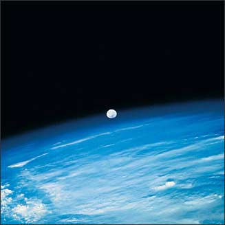
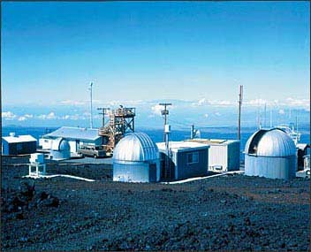

OBJECTIVE: to analyze CO2 data collected over 45 years from the Mauna Loa Observatory in Hawaii and interpret the role of photosynthesis in producing these data
In the photograph below, the Earth's atmosphere can be seen as a thin blue line. The atmosphere is composed of gases containing concentrations that fluctuate over time.

At the Mauna Loa Observatory in Hawaii, scientists are studying these atmospheric changes, including the amount of carbon dioxide, CO2, in the atmosphere. This laboratory is in an excellent location because it is located at 3,353 meters (11,000 feet), surrounded by water, away from industrial pollution, and near the equator.

A group of scientists have gathered to study the data collected over the past 50 years. See if you can help them interpret the findings. Go to page  to see the data.
to see the data.